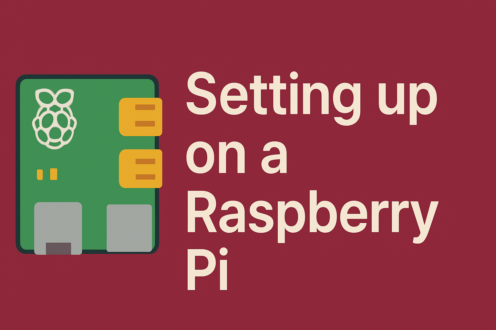
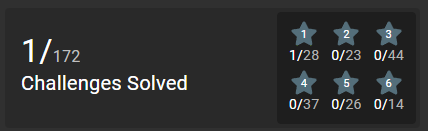
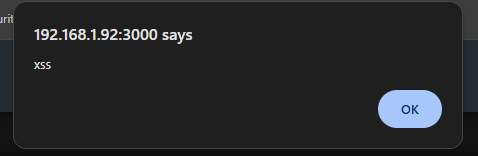
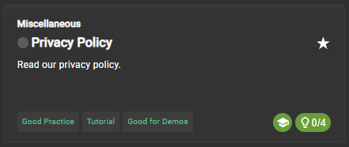
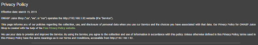
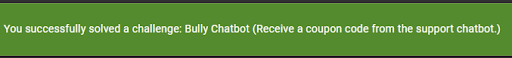

OWASP Juice Shop Part 1

OWASP JuiceShop is an intentionally vulnerable web application. There are many places the web application is hosted. Either locally or over the internet. It is made to resemble a modern e-commerce site - except it has real security vulnerabilities mixed in.
The main purpose of this vulnerable web application is to be a tool to help teach aspiring penetration testers, developers learn secure coding, students/researchers, and CTF (Capture the Flag) beginners.
It is lightweight and easy enough to get started on a VM or an old raspberry pi you have laying around.
Now I am not going to bore you with getting the raspberry pi setup. There are thousands of tutorials or walkthroughs for that. If you do not know how to set up your raspberry pi then take the time now to go and do that. You can always come back here when that is done.
The Set up

Are you back now? Okay good, see that was not so hard to do. Plus there are so many resources out there that can teach you how to do it. My goal is to provide some helpful insight and knowledge rather than all the answers. I want you to think for yourself and attempt to get the answers rather than doing a step by step guide or walkthrough.
To set up the OWASP JuiceShop you need two commands (run with sudo).
docker pull bkimminich/juice-shop
docker run --rm -p 3000:3000 bkimminich/juice-shop
That is it. Once everything is done downloading you can restart your raspberry pi using: sudo reboot and then you are good to go. To connect or open the web application go to http://your-ip-address:3000
You can find a list of some of the challenges plus walkthroughs here at the following link. However, to truly understand and to learn I recommend using it to get started. Not as a walkthrough so you get all the answers (as you will only learn one way to do something and not the thought process behind it.)
OWASP Juice Shop - https://owasp.org/www-project-juice-shop/
NOTE:
I am running this on my raspberry pi using docker. There are some challenges that will not be available due to security concerns or technical incompatibility.
CHALLENGE - Score Board
Often challenges, flags, or answers can be hidden. Much like a malicious file can be hidden on your computer and executed. Data can be hidden too. For example a webpage that is unknown to the user or attacker. It could have potential data that you can use to your advantage or have other vulnerabilities.
Developers can often leave comments, messages, or plaintext data in their files. Instead of randomly guessing what the url would be one might look at the files for the web application itself. Using a search like function and key words that you might be looking for. If you have ever set up a flask server, the server file will contain all possible paths for pages. When the user enters the url the server checks the path and produces the correct page for the user. Sometimes they leaves notes or use other files that do the same thing. Finding the right path (url extension) can often lead one to find treasure.
As if X marks the path.

CHALLENGE - DOM XSS
DOM is often used with e-commerce sites and stands for Distributed Order Management. This can be exploited if vulnerable to be able to run a cross-site scripting attack. An attacker can inject malicious scripts into a trusted website to be executed in a victim’s browser.
Cross-site scripting is just one of many ways an attacker can target a user. Lets break down how cross-site scripting works.
- An attacker finds a vulnerability in a website typically in areas where user input is handled (often not encoded or validating the user input).
- The attacker injects malicious code (i.e. JavaScript, PHP, etc.) into the website.
- The user clicks a malicious link or visits the compromised website.
- The website sends the page with the malicious code to the user’s browser.
- Browser executes the script (believing it to be trustworthy).
- The script can then perform actions on behalf of the user.
NOTE:
There is a bonus payload challenge that you can do with the DOM XSS challenge.
This challenge does give you some code that you are able to use. Your goal is to figure out what to do with the provided code.
<iframe src="javascript:alert(`xss`)">

If you have successfully completed the DOM XSS attack then attempt the Bonus Payload. The steps are pretty much the same.
NOTE:
Keep track of what you have done so far and the steps to recreate the attack or exploit. This will help with your documentation skills. It also starts to create a playbook that you can use when you notice another web application with similar potential vulnerabilities. When doing a penetration test or CTF challenges you may not be given code or a list of what to do.
CHALLENGE - Privacy Policy

Hmmmmm….. This seems a little too easy. Now you are more than welcome to scour the site to try and find the Privacy Policy. Now if you sign up for many accounts (like a normal person in 2025) you will notice they often make you check a box saying you have read their terms and services. This often includes a privacy policy. So like any good customer wanting to buy something from an e-commerce store, let's make an account.
Now I could give you the answer and direct you how to find the answer. However, I will stress this again. I want you to develop the skills rather than rely on walk throughs. Use your intuition and knowledge to try and figure out how to get to the privacy policy. Have you ever viewed it for other accounts you might have on various sites? Where have they often been located?

CHALLENGE - Bully Chatbot
Are you a keyboard warrior behind a monitor? Do you play League of Legends (arguably the most toxic gaming community)? Well crack your fingers and let's make a chat Bot give us some sweet deals on products from the store in the form of a coupon.
Or maybe we don’t have to be mean…..

I guess it paid off. Whatever I said he gave me a pretty sweet deal. The poor guy never stood a chance.
Now if you have made it this far you either enjoy reading and have not yet attempted to solve these challenges, Or you have solved the challenges and are well on your journey into learning penetration testing. Third option is you were really bored and put up with my gramatical errors and poorly written sentences. Regardless of which I hope you have enjoyed my blog so far. I am going to be trying to post more content and cover a vriety of topics. For now I am going to continue with OWASP Juice Shop so stay tuned for part 2.